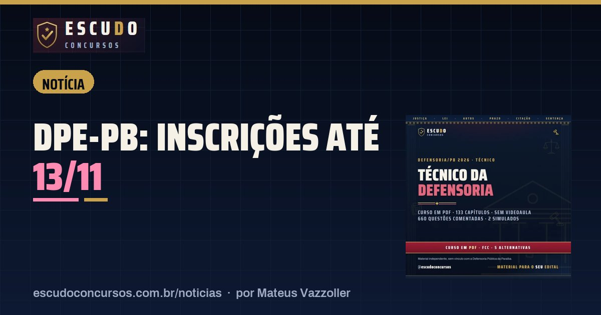

DPE-PB Técnico da Defensoria: locais de prova saem em 11/12 e a prova é em 28/02/2027
NotíciaPublicado em 11 de novembro de 2026, atualizado em 23 de novembro de 2026 · por Mateus Vazzoller, ESCUDO Concursos

Atualização em 23/11/2026: As inscrições terminaram em 13/11. A próxima data é 11/12/2026, quando a FCC publica o edital de convocação com os locais de prova. A prova objetiva de Técnico da Defensoria é em 28/02/2027, domingo de manhã, com recurso contra o gabarito em 02 e 03/03. Quem se inscreveu tem pouco mais de três meses: o peso de cada bloco e o que cai estão no guia do concurso DPE-PB.
| Órgão | Defensoria Pública do Estado da Paraíba (DPE-PB) |
|---|---|
| Banca | Fundação Carlos Chagas (FCC) |
| Cargo | Técnico da Defensoria (A01), nível médio, 9 vagas e cadastro de reserva |
| Inscrições | Encerradas em 13/11/2026 |
| Locais de prova | Edital de convocação em 11/12/2026 |
| Prova objetiva | 28/02/2027, domingo, de manhã |
| Recurso contra o gabarito | 02 e 03/03/2027 |
Quem quer atender o público na Defensoria Pública da Paraíba, a instituição que leva a Justiça a quem não pode pagar advogado, tem até sexta-feira, 13/11/2026, às 23h59 (horário de Brasília) para se inscrever como Técnico da Defensoria. A inscrição é feita só no site da Fundação Carlos Chagas, a taxa é de R$ 103,00 e o boleto pode ser pago até 16/11/2026. A FCC não publicou prorrogação: a página do concurso, consultada na manhã desta quarta-feira, segue com o mesmo prazo e só os Editais nº 01, 02 e 03/2026.
O que muda depois de 13/11?
O prazo de 13/11 vale para três coisas ao mesmo tempo, e não só para a inscrição:
| O que fazer | Prazo |
|---|---|
| Preencher o formulário e enviar a foto | 13/11/2026, às 23h59 |
| Pedir atendimento especial para a prova, com atestado | 13/11/2026, às 23h59 |
| Concorrer como pessoa com deficiência, com laudo médico | 13/11/2026, às 23h59 |
| Gerar o boleto | 16/11/2026, até 22h |
| Pagar o boleto | 16/11/2026, no horário bancário |
Ou seja, o boleto ganha três dias a mais, mas o formulário e os pedidos especiais não. Quem deixar o laudo ou o atestado para segunda-feira perde a vaga reservada ou o atendimento, mesmo pagando a taxa.
Como fazer a inscrição na FCC
O caminho é o Portal do Candidato em www.concursosfcc.com.br, na página do concurso da DPE-PB. Os passos do item 4.4 do edital:
- Ler e aceitar o requerimento e preencher o formulário com o código A01, que é o do Técnico da Defensoria (sem especialidade).
- Enviar uma foto recente, de cabeça descoberta e com os ombros aparecendo.
- Gerar o boleto no próprio site da FCC e pagar em qualquer banco.
Duas regras do edital pegam muita gente. A primeira: o pagamento só vale pelo boleto gerado no site da FCC, e não são aceitos depósito, transferência ou pagamento fora do prazo. Pagamento feito pela internet ou no caixa eletrônico depois do horário limite do banco no dia 16/11 entra no dia útil seguinte e não é considerado. A segunda: depois de efetivada a inscrição, não dá para trocar o código do cargo nem pedir a taxa de volta. Quem fizer mais de uma inscrição fica só com a última.
Quem pode se inscrever?
O cargo pede ensino médio completo e idade mínima de 18 anos. O Técnico da Defensoria cuida do atendimento ao público, do suporte técnico e do apoio administrativo, e trabalha ao lado do Analista. A jornada é de seis horas corridas ou de oito com intervalo de duas, no regime estatutário da Lei Complementar estadual nº 205/2024.
O pedido de isenção da taxa já passou: o resultado final saiu em 15/10/2026.
E depois da inscrição?
| Etapa | Data |
|---|---|
| Resultado dos pedidos de atendimento especial e de vagas reservadas | 24/11/2026 |
| Mesmo resultado, depois dos recursos | 01/12/2026 |
| Edital de convocação com o local de prova | 11/12/2026 |
| Prova objetiva, de manhã, em João Pessoa | 28/02/2027 |
| Gabarito e questões no site da FCC, a partir das 17h | 01/03/2027 |
Do fim das inscrições até a prova são cerca de três meses e meio. A prova tem 60 questões de cinco alternativas, sem redação para o Técnico, e é habilitado quem fizer média ponderada de 6,00. O que cai em cada matéria, o peso das duas provas e o corte de classificação estão no guia do concurso DPE-PB.
O cupom DPEPB37 do curso ESCUDO para a DPE-PB também vence em 13/11/2026: o PDF sai por R$ 37 em vez de R$ 47 até sexta-feira.
Curso ESCUDO Técnico da Defensoria Pública da Paraíba em PDF: 133 capítulos e 660 questões comentadas, 2 simulados no formato da prova, de acordo com o edital. R$ 47.
Ver o curso
Perguntas frequentes
Até quando vão as inscrições do concurso DPE-PB?
Até 13/11/2026, às 23h59 no horário de Brasília, só pela internet, no site da Fundação Carlos Chagas.
Até quando posso pagar a taxa da DPE-PB?
O boleto de R$ 103,00 pode ser gerado até as 22h de 16/11/2026 e precisa ser pago nesse mesmo dia, dentro do horário bancário.
Ainda dá para pedir isenção da taxa?
Não. Os pedidos de isenção foram feitos em setembro e outubro, e o resultado final, depois dos recursos, saiu em 15/10/2026.
Leia também
- NotíciaGM Campinas: inscrições e pedido de isenção abrem quarta, 25/11, às 10h
24 de novembro de 2026 · Inscrições da Guarda Municipal de Campinas abrem quarta, 25/11, às 10h, no site da Vunesp. Isenção até 02/12, inscrições até 08/01/2027 e taxa de R$ 67,90.
- NotíciaTRT-4 Técnico Judiciário: inscrições terminam quarta-feira, 25/11, às 23h59, e o boleto vence na quinta, 26/11
23 de novembro de 2026 · Concurso TRT-4 (RS): inscrições para Técnico Judiciário terminam em 25/11/2026, às 23h59, na FCC. Taxa de R$ 90,00, boleto até as 22h de 26/11.
- NotíciaIBGE Recenseador: inscrições e pedido de isenção terminam quarta-feira, 25/11, e a taxa vence na sexta, 27/11
23 de novembro de 2026 · Seleção do IBGE para Recenseador do Censo Agro: inscrições e pedido de isenção terminam em 25/11/2026, às 23h59. Taxa de R$ 70,00 paga até 27/11.
Guia completo do concurso: edital, vagas e o que cai · Mais notícias e dicas de concursos